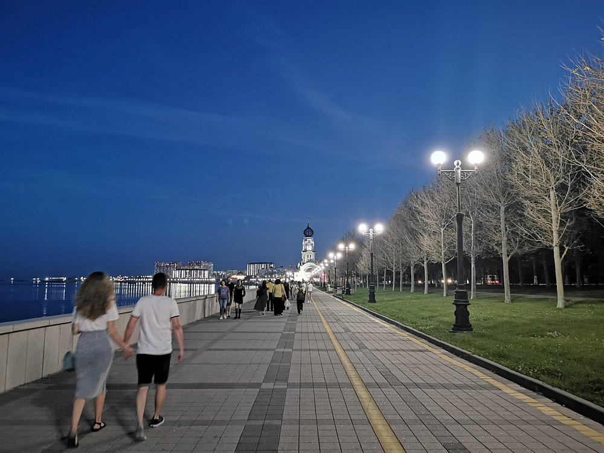

Сердце Новороссийска
Мост между героическим прошлым и динамичным будущим.
История
Носит имя первого градоначальника и основателя города
Закаты
Самые живописные закаты на всём Черноморском побережье
Прогулки
Пешеходная зона протяженностью более 2 километров

Моменты набережной
Фотографии, которые передают атмосферу этого места
1 / 3
На карте города
Найдите свой идеальный маршрут для прогулки
Как добраться
Центральная набережная, легко дойти от ж/д вокзала или автовокзала
Лучшее время
Утро для спокойной прогулки или вечер для романтичного заката
Интересные факты
1
Морские ворота
Набережная — это лицо города-порта, встречающее все круизные лайнеры
2
Архитектура
Сочетание современного дизайна с исторической застройкой XIX века
3
Культурный центр
Здесь проходят все major городские мероприятия и фестивали